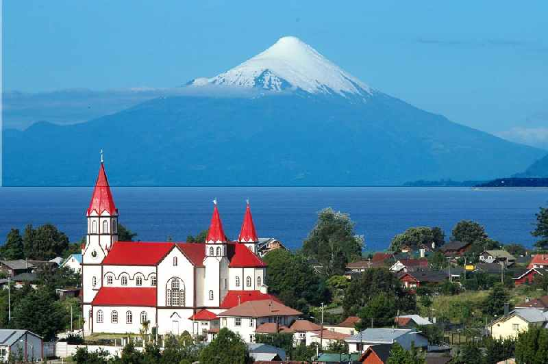

Cruce Andino

3 noches en Bariloche / 2 noches en Puerto Varas, Chile
Incluye:
Transfer
Hotel
Excursion
Coordinador
NO incluye
Entradas a Parques Nacionales, Entradas a Museos, Comidas y bebidas, Tasas de embarque, Asistencia Médica.
(Excepto que se aclare lo contrario)
Cruce Andino Argentina y Chile: Lago Nahuel Huapi, Puerto Blest, Lago Frias, Peulla, Lago Todos los Santos, Petrohué. Recorrido terrestre y lacustre.

Opcionales:
Bariloche
- Circuito Chico (Opcional Ascenso Cerro Campanario)
- Cerro Catedral
- Cerro Tronador y Ventisquero Negro
- Navegaciones: Isla Victoria y Bosque de Arrayanes / Puerto Blest con Cascada de los Cantaros
- San Martín de los Andes por ruta de los 7 lagos
Puerto Varas
- City Tour Puerto Montt y Puerto Varas
- Frutillar
- Llanquihue
- Volcan Osorno
- Isla de Chiloe (Ancud, Castro y Dalcahue)